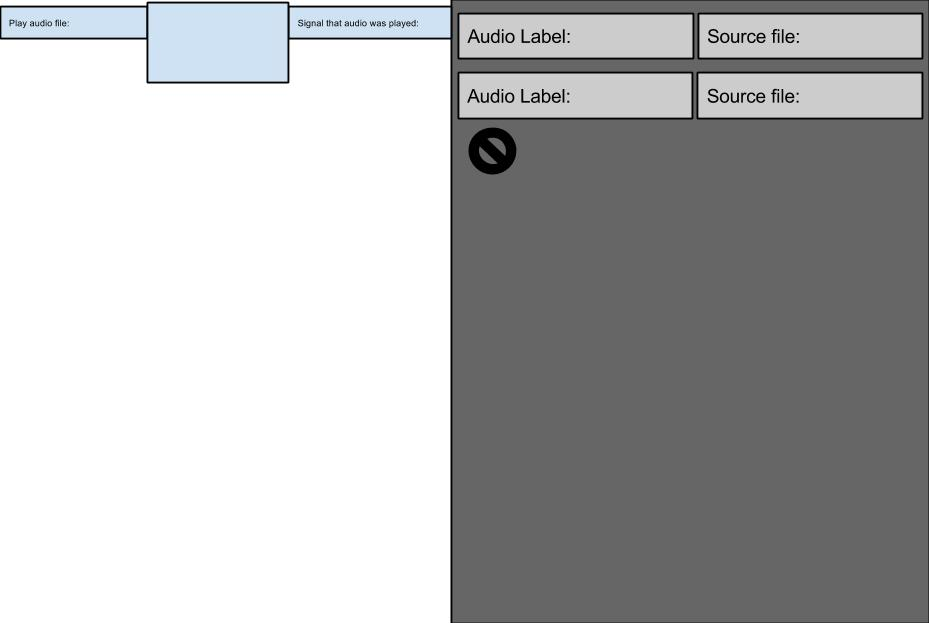

Audio Que Component:
This component listens for an incoming label and fires off and then fires off its connected audio file.
The basic result of this component is to give audio to button presses, and any other audio needs the author might need for there app.
Listener Channel:
-
Play audio: This listens to the value coming in and determines if its connected to an audio file.
If it is then it will play that audio file.
Output Channels:
-
Sound Played: This sends a value out to tell other components that the audio has been played.
